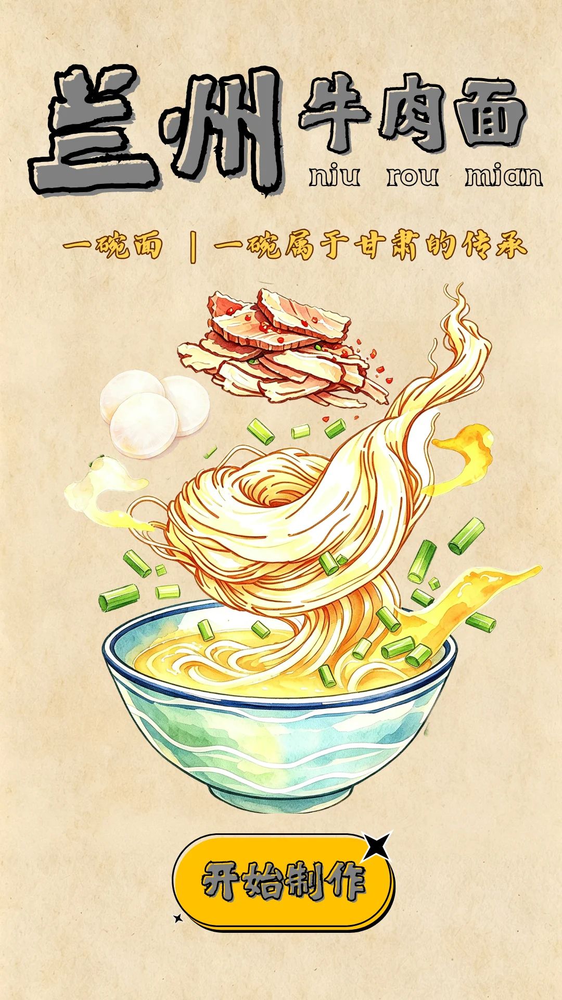
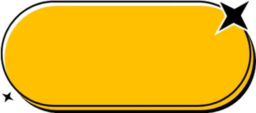
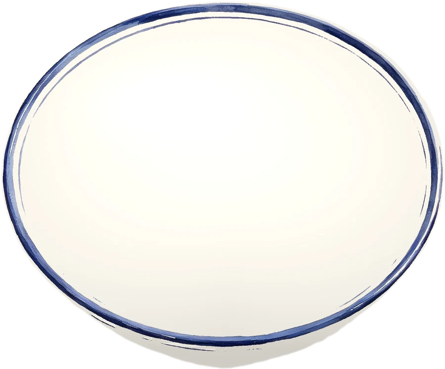

蘭
兰州牛肉面
正在拉面


开始制作
一 清 · 二 白 · 三 红 · 四 绿 · 五 黄
来兰州
吃一碗现拉的面
汤要清到透亮，面要黄到筋道
这一碗，从嘉庆年间一直热到现在
再拉一碗
黄河
轻触「再拉一碗」· 回到开篇
壹 · 十二面型
已 翻
0
/ 6
一清·二白·三红·四绿·五黄
轻触木牌·翻看背面
下一屏
贰 · 粗细宽窄
已 翻
0
/ 6
一根面·十二种脾气·任你挑
轻触木牌·翻看背面
下一屏
把它端起来
拖 拽 食 材 入 碗

你的专属面做好了
看这碗面的故事
贰 · 百 年 面 史
一根面的百年
兰州
左右滑动 浏览整根面
收尾
横过手机，这一屏更好看

 已 翻 0 / 6
已 翻 0 / 6
已 翻 0 / 6
已 翻 0 / 6